<footer class="bg-surface-container-lowest w-full py-section-padding border-t border-white/5">
    <div class="max-w-[1200px] mx-auto flex flex-col md:flex-row justify-between items-center px-gutter gap-8">
        <div class="flex flex-col items-center md:items-start">
            

            <p class="font-body-md text-body-md text-on-surface-variant">
                © 2026 Vivek Kumar. All rights reserved.
            </p>
        </div>
        <div class="flex gap-8">
            <a class="text-on-surface-variant hover:text-primary transition-colors flex items-center gap-2"
                href="https://linkedin.com/in/vivekrajput7594" target="_blank" rel="noopener noreferrer">
                <span class="material-symbols-outlined text-sm">link</span>
                LinkedIn
            </a>

            <a class="text-on-surface-variant hover:text-primary transition-colors flex items-center gap-2"
                href="https://github.com/vivekrajput077" target="_blank" rel="noopener noreferrer">
                <span class="material-symbols-outlined text-sm">code</span>
                GitHub
            </a>
        </div>
    </div>
</footer>